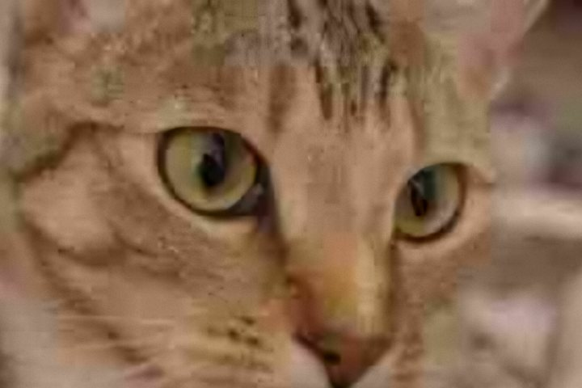
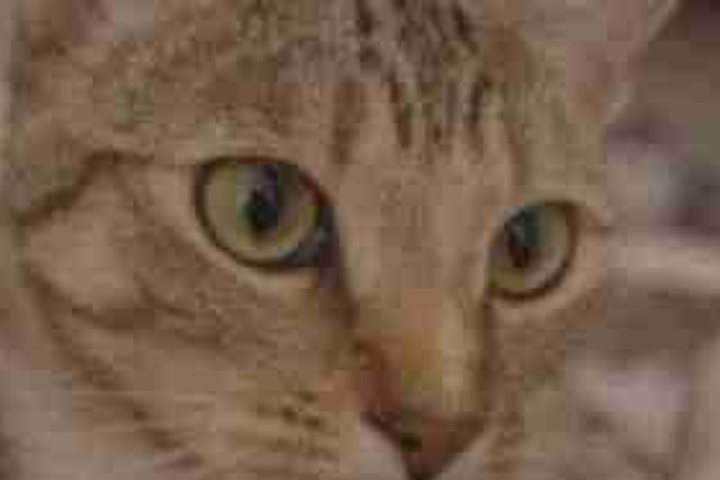

Vidéos et photos anciennes
Redonne de l’éclat à tes vieux films de famille 🎞️
- 🔒 100 % privé
- ✨ Gratuit
- 👤 Sans compte


Moins de blocs et de bruit, des couleurs plus justes, une image plus nette. Tout est calculé sur ton téléphone : gratuit, sans filigrane, sans inscription, et ça marche même en mode avion.
- 📱Choisirune vidéo ou une photo
- 👀Comparermaintiens « Original »
- 🎉Exporterpuis enregistrer
Liens compatibles : TikTok, Facebook, Twitter / X, Snapchat, Pinterest, Reddit, Tumblr, Bluesky, LinkedIn, Twitch (clips), Streamable, Imgur, 9GAG. La vidéo arrive dans sa meilleure qualité, prête à être retouchée ou enregistrée.
Regrouper des vidéos
Les vidéos seront mises bout à bout dans cet ordre. Choisis-les dans n’importe quel ordre : « Remettre dans l’ordre » le retrouve à partir des images et des dates ; les flèches permettent de corriger.
Tes vidéos et photos restent sur ton téléphone : elles ne sont envoyées à aucun serveur. Internet ne sert qu’à télécharger un modèle IA (le fichier du modèle, rien d’autre), à charger une vidéo à partir d’un lien et, si tu l’actives, à calculer sur ton propre compte Kaggle. Dans la version Claude, l’analyse IA facultative envoie une image, et des mesures techniques anonymes (vitesse, réglages) aident à améliorer l’app.
Dans Safari, appuie sur Partager, puis sur « Sur l’écran d’accueil ». L’app s’ouvrira ensuite comme une vraie app.
Rapport du fichier
Choisis la taille du résultat. Tout le reste est réglé automatiquement.
Rendu voulu :
Analyse automatique
Déjà appliqué. Décoche ce que tu ne veux pas.
Résultat
Glisse le curseur pour comparer. Zoome puis fais glisser l’image pour inspecter les détails (à partir de 4×, chaque pixel réel est montré tel quel). Double-touche pour zoomer à cet endroit.
Fais glisser le doigt sur la vidéo (ou le curseur du dessous) : à gauche l’original, à droite le résultat.
Pour publier sur TikTok ou Instagram : active « Importer en haute qualité » dans l’app au moment de publier, sinon elle recompresse fortement la vidéo.
Photo animée
Avant / après
Compte rendu de l’export
Détails techniques
Options de la vidéo
Le format de l’image est toujours gardé (portrait reste portrait) ; rien n’est recadré ni déformé. Agrandir ne crée pas de vrais détails : au-delà de la taille d’origine, ils sont estimés.
Réglages manuels de l’image (déjà réglés automatiquement)
Facultatif : pars d’un préréglage, puis affine.
Retirer un filtre de réseau social (essai)
Touche la miniature qui paraît la plus naturelle (peau, murs, vêtements). « Aucun » garde la vidéo telle quelle.
Retire les filtres de couleur et de lumière. Pas les autocollants, textes, masques ou déformations.
Vitesse et sens de lecture
Corrige une vidéo accélérée ou ralentie, ou la remet à l’endroit. La partie choisie dans Réglages est respectée.
Prolonger la vidéo (essai)
Continue l’action en réutilisant les gestes qui se répètent dans ta vidéo. Sans le son, vidéo de 2 minutes maximum.